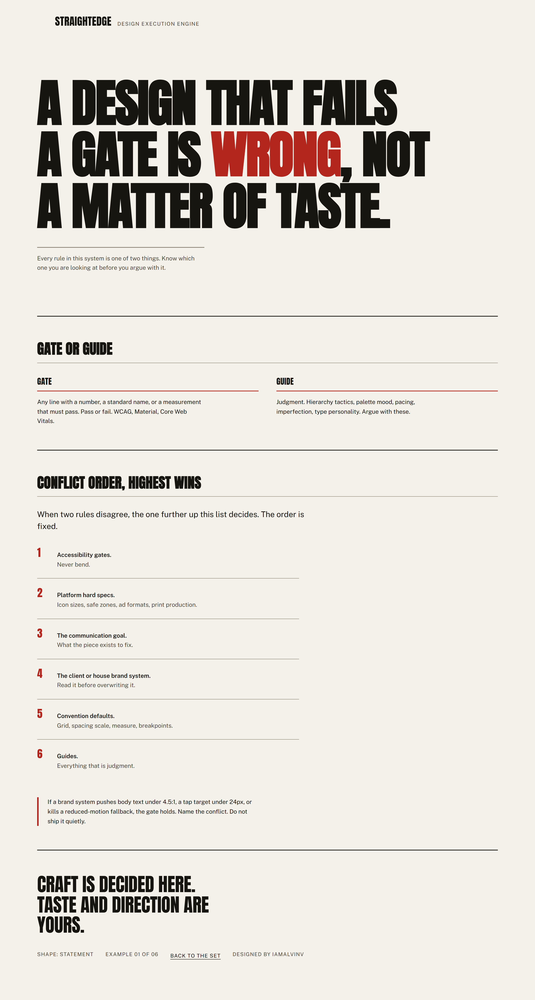
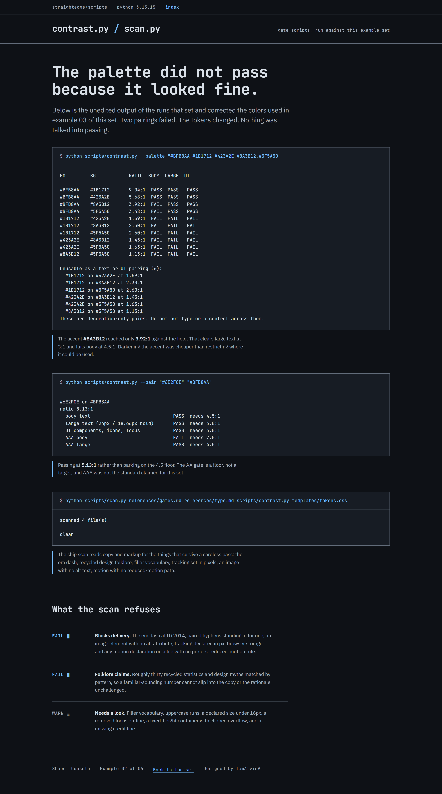
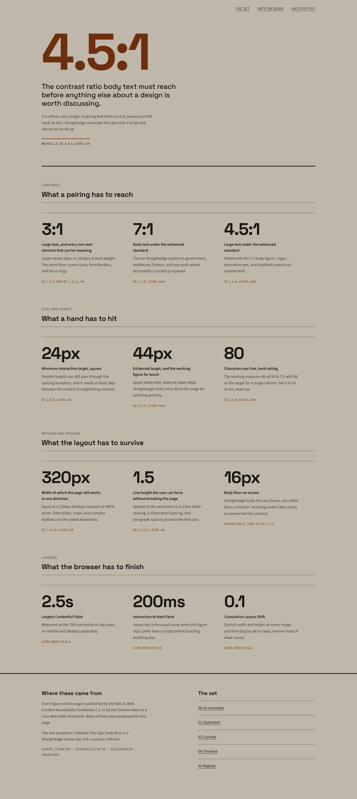
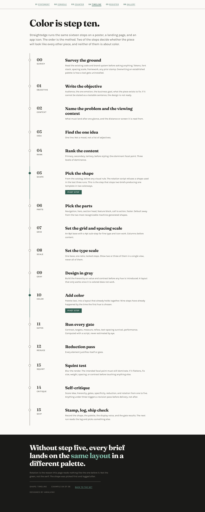
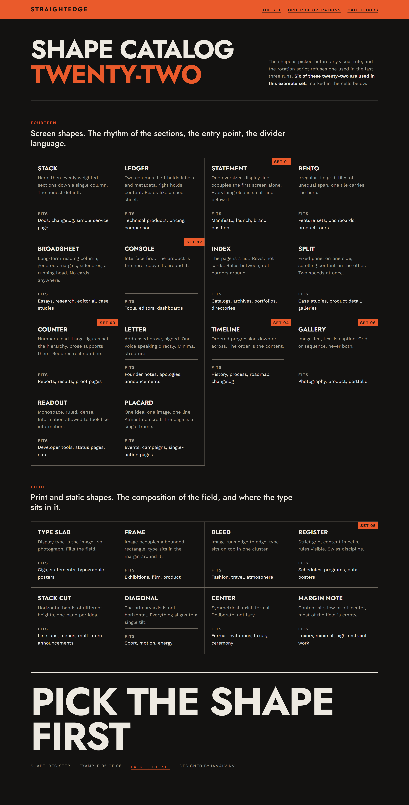

Five briefs, five shapes, no repeats.
Each page below sits on a different structural shape, picked before any color or type decision and cleared by the rotation script. No two consecutive pages share a shape, a navigation part, a footer part, or more than one of the three dressing axes. Every pairing shown was computed with the contrast gate.

Example 01
Statement
One oversized display line holds the first screen alone. Everything after it is small, ruled, and subordinate. The idea: a gate is not an opinion.
Open the page- Nav
- nav:mark
- Foot
- foot:statement
- Band
- Light, #F4F1EA
- Voice
- Condensed heavy, Anton
- Accent
- #B3261E, 5.79:1

Example 02
Console
The product is the hero and the copy sits around it. The panels hold unedited output from the runs that set the palette of example 03.
Open the page- Nav
- nav:tier
- Foot
- foot:line
- Band
- Dark, #0E1116
- Voice
- Mono, JetBrains Mono
- Accent
- #79C0FF, 9.72:1

Example 03
Counter
Figures lead and prose supports them. The shape needs real numbers, so every figure is a published WCAG criterion or a Core Web Vitals threshold, cited in the cell.
Open the page- Nav
- nav:links
- Foot
- foot:pair
- Band
- Mid, #BFB8AA
- Voice
- Grotesque, Space Grotesk
- Accent
- #6E2F0E, 5.13:1

Example 04
Timeline
The order is the content. Sixteen steps run down a single spine, with the two that decide whether a piece looks generic marked as pivots.
Open the page- Nav
- nav:index
- Foot
- foot:invert
- Band
- Light, #FBFAF7
- Voice
- Serif, Fraunces
- Accent
- #2F5D50, 7.18:1

Example 05
Register
A print composition rather than a screen one. Strict grid, content in cells, rules visible. Twenty-two shapes on a single sheet, six of them marked as used in this set.
Open the page- Nav
- nav:band
- Foot
- foot:mark
- Band
- Dark, #131211
- Voice
- Geometric sans, Jost
- Accent
- #EA5A2B, 5.34:1